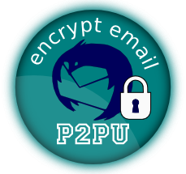

What you can learn from this chapter:
Email is decentralised and therefore can be very secure. However, many people use less secure forms of communication such as commerical webmail providers (Google, Hotmail, Hushmail etc.) and social networking sites. Be aware that these companies will:
Happily, there are alternatives. Independent email services are run by media activist collectives such as riseup.net or aktivix.org, who understand the need for privacy, anonymity and trust. Unlike corporate providers, they will not give your emails to the authorities without a warrant and a legal fight. If that happens, they will make it public if they can, so you (and thousands of other activists) will know about it.
Independent email providers provide a web interface over an encrypted connection, and encrypt all messages sent between themselves; an email from an aktivix user to a riseup user is encrypted both as it's composed and when it travels between aktivix and riseup.
Signing up for an independent email address is not an immediate automated process, because of spammers. For example, aktivix.org issues email addresses though a friend-of-a-friend basis. If you know someone with an aktivix.org email address, you can fill in a the sign up form at www.aktivix.org
Alternatively, you can sign up for an account at riseup.net or autistici.org. You will need to fill in a short form letting them know why you want the email and they normally respond in 24 hours.
A dedicated mailing list can handle large email lists which you can’t manage manually. People can subscribe to or unsubscribe from the list and the server handles security, privacy and archiving; members of the list don’t automatically know the email addresses of all the other members. Lists provided by activist collectives are only as good as their weakest point: if just one address is "@googlemail.com", you can’t consider the list to be secure.
Collectives that provide mailing list services include the following: aktivix.org, riseup.net, autistici.org. We recommend aktivix.org. Email aktivix-request@lists.aktivix.org to request a list; stating your request simply in the subject line (e.g. "Subject: request for list for XYZ group/purpose") makes it easier to separate from sp@m. Not all names are possible, so be prepared to change. Think about the following points when creating a list:

If you are concerned about privacy but not using a secure webmail service, are communicating with someone who is not, or want an addition of level of personal security, you can encrypt your email.
Encryption is the process of taking a plain text message and converting into something that looks like gobbledygook, which can be decrypted and read by the intended recipient. The free software tool of choice for this is called GPG (GNU Privacy Guard). Many people find GPG tricky, so be prepared that it may take time - but it is worth it.
GPG encryption uses pairs of numbers called key pairs: a public key and a private one. You give your public key to anyone you wish to have encrypted communication with, but keep your private key absolutely secret, as it is used to decrypt email sent to you. It is so secret that it needs protecting with a passphrase, which is basically a very long password.
By encrypting email using the recipients' public keys, the sender can be assured that only the authorised recipients will be able to read it - privacy. If the email is signed by the sender's GPG key, the recipient can be assured of the identity of the sender - authenticity.
Step-by-step instructions to set up and use GPG with the Thunderbird email client can be found in the book Basic Internet Security and there is an online course which TTFA run at P2PU.org; you can even earn a badge. imc.li/ttdpz